Inside BNX
01Where business
meets purpose.
Day 3 took the Academy beyond the training room and into the heart of a growing Malaysian enterprise. At BNX Delight Holding Sdn. Bhd., participants experienced how vision, values and operational discipline come together to build a distinctive business.
Through the corporate sharing, factory tour and candid dialogue with the BNX team, participants discovered the decisions behind the brand—from product consistency and customer experience to people, culture and leadership under pressure.
“To become the only one, you must know what you stand for—and have the courage to keep building it.”
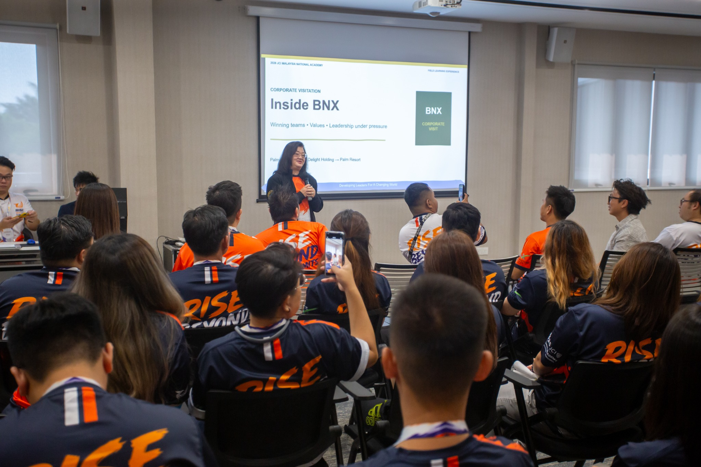
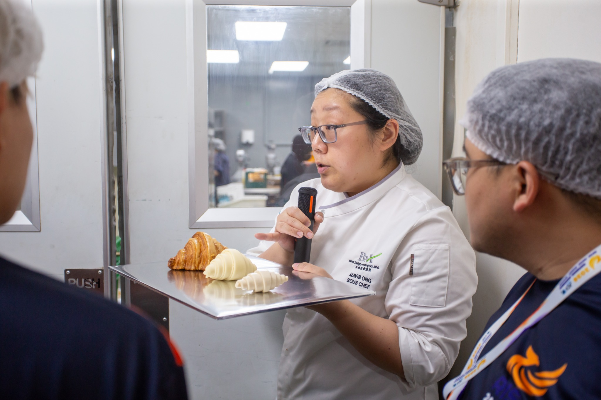
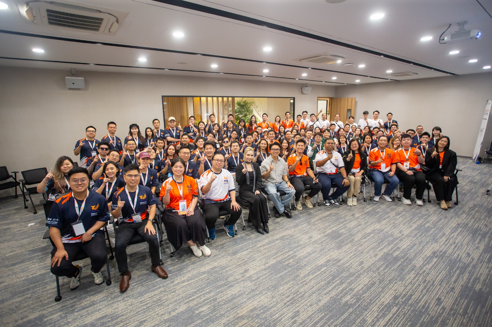
One visit.
Three lenses.
Clarity
A strong organisation knows its purpose and makes every decision through it.
Culture
Winning teams are built through trust, standards and shared ownership.
Courage
Leadership under pressure means staying adaptable without losing your values.
Back at the Academy
02Think deeper.
Lead stronger.
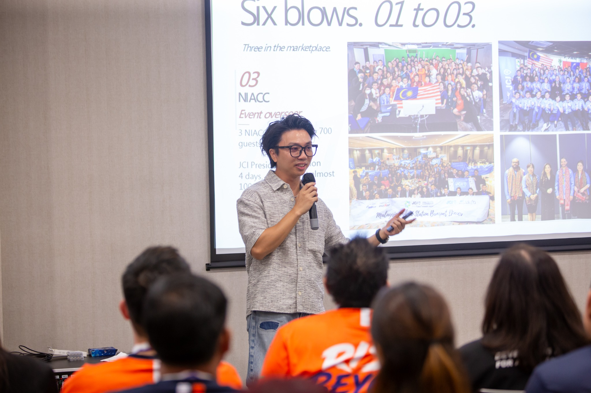
From insight to application
The day continued with interactive leadership modules and case studies. Participants examined crisis management, organisational continuity and decision-making—then turned their ideas into practical strategies with their teams.
Questions were encouraged, perspectives were challenged and every contribution added another layer to the learning.
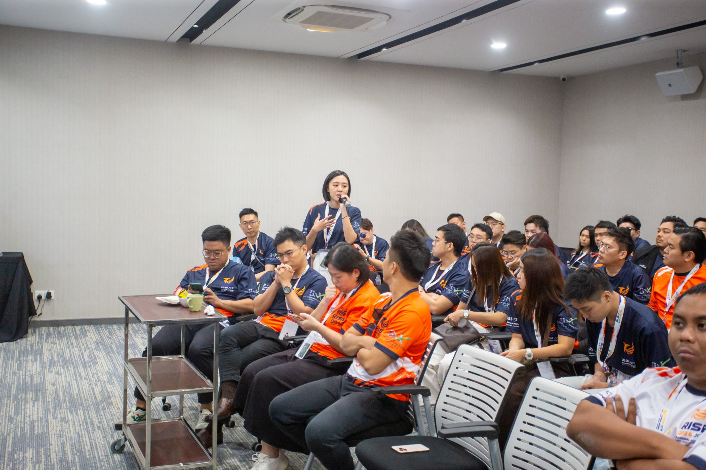
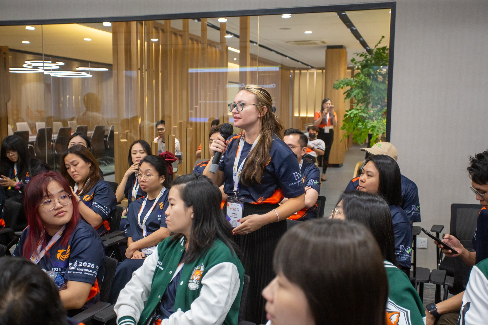
Leadership in action
Crisis
Case Study.
Teams had minutes to prepare, align and present. Under pressure, clear communication became the difference between a collection of ideas and one confident direction.
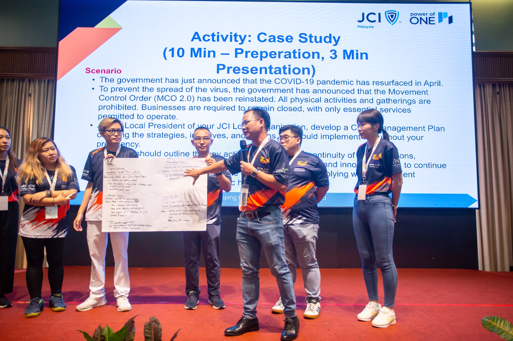
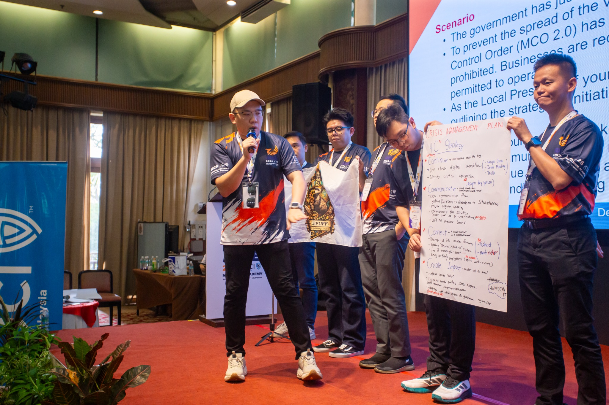
Beyond the module
Connection is
part of the learning.
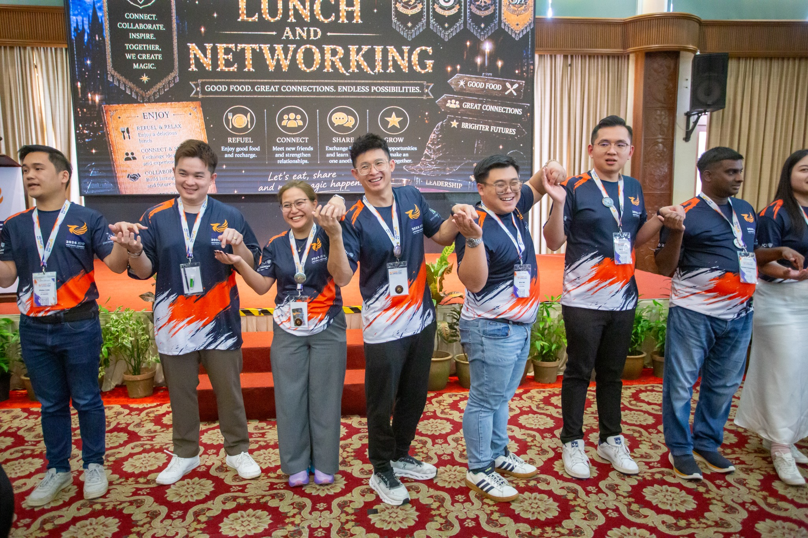
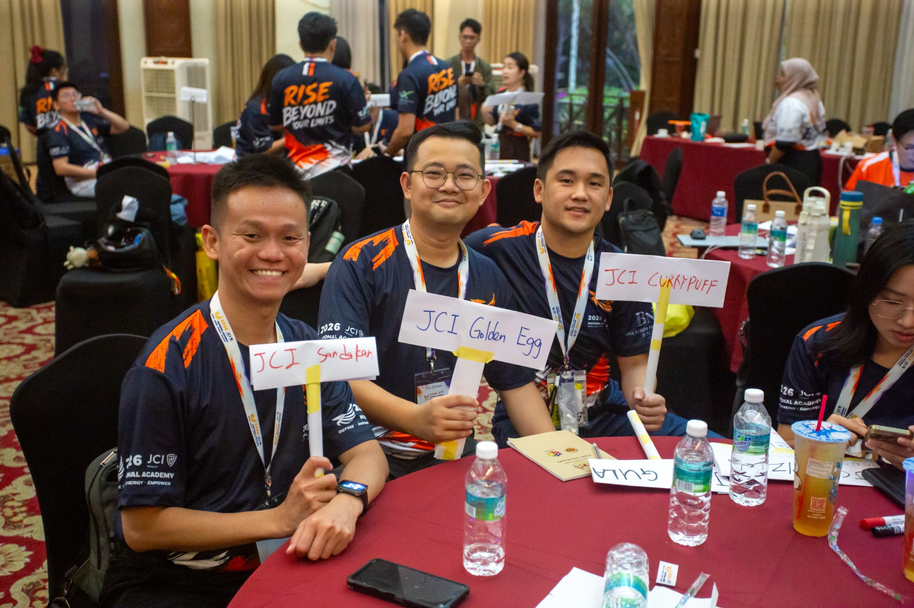
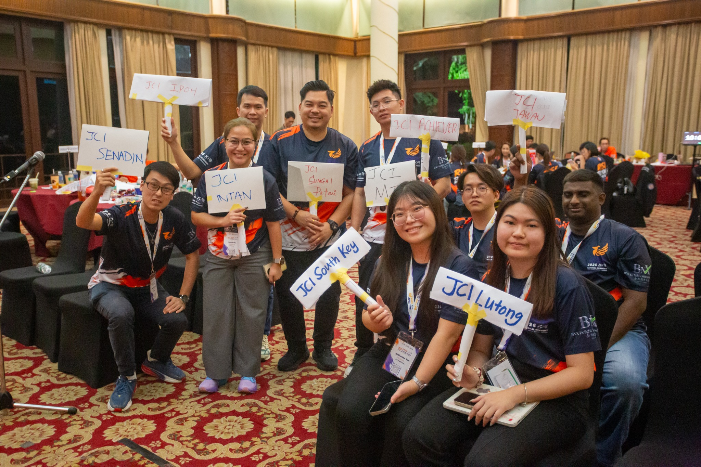
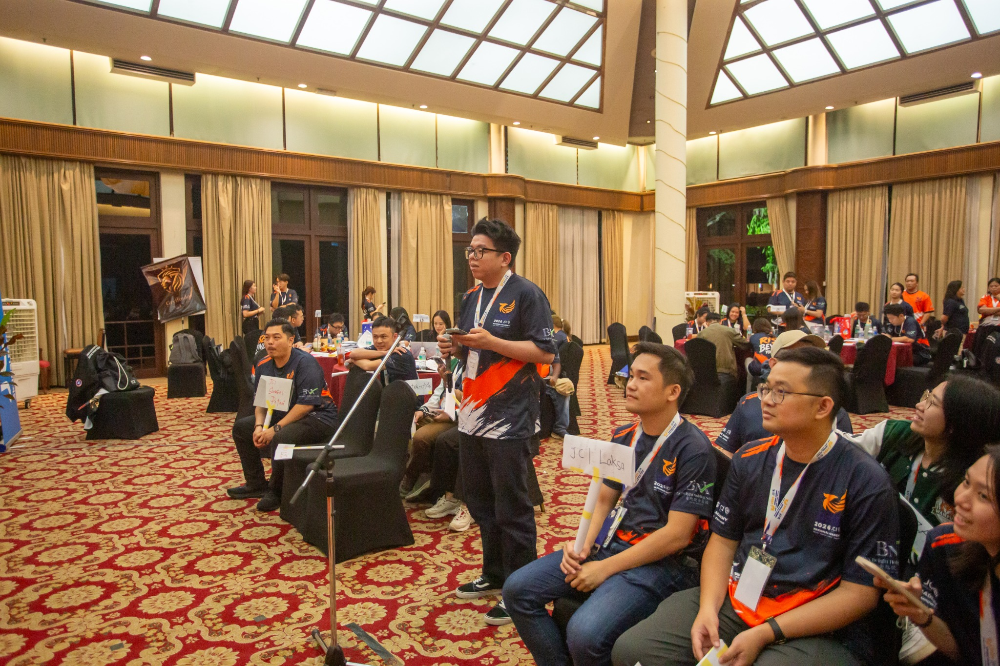
Prepare · Plan · Persuade
Find your voice.
Own your stand.
The debate session transformed the ballroom into an arena of ideas. Participants listened, responded and defended their positions with confidence—learning that leadership is not only about having something to say, but knowing how to say it with purpose.
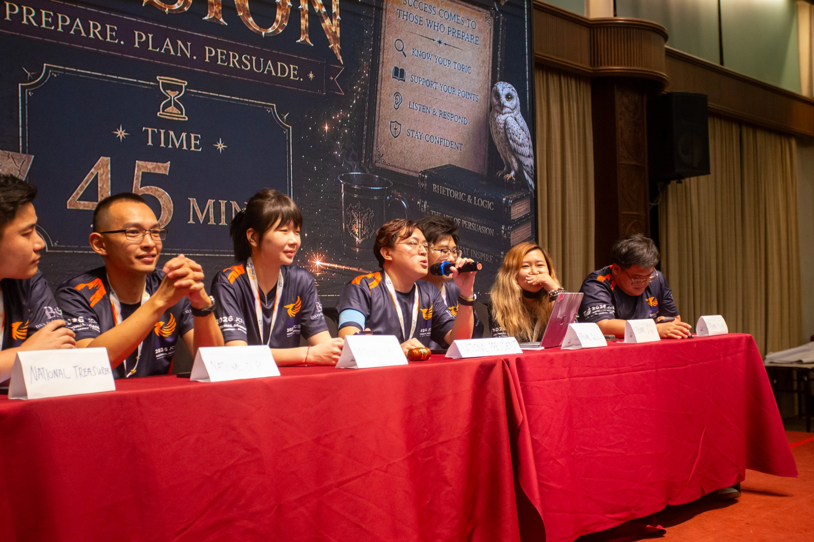
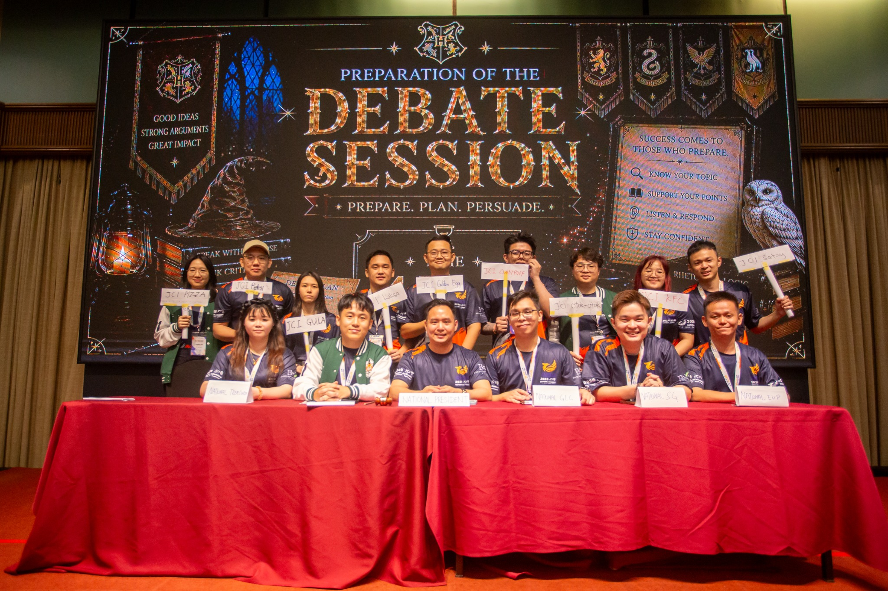
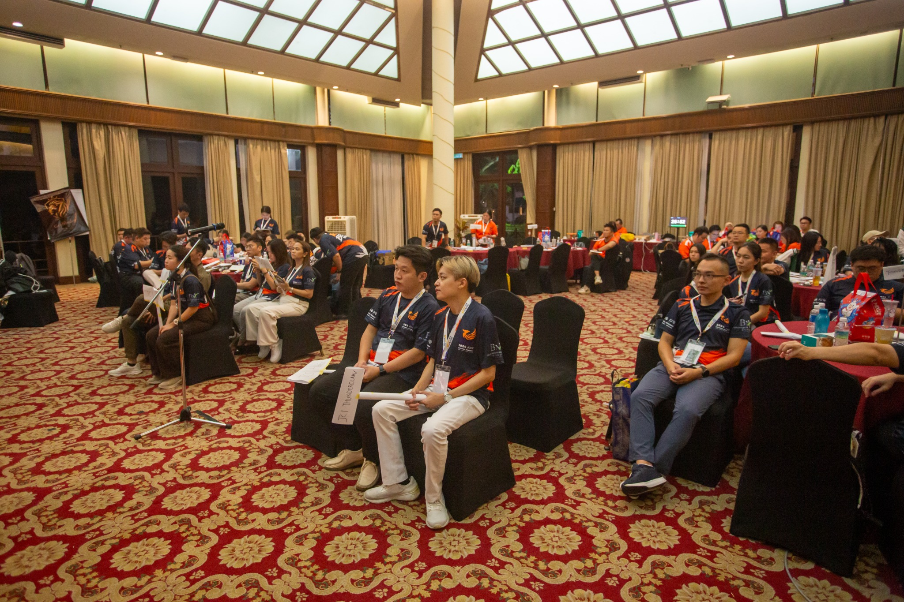
Day 03